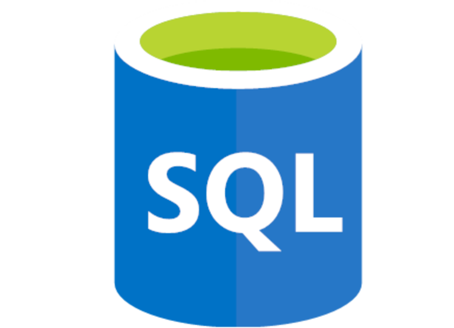
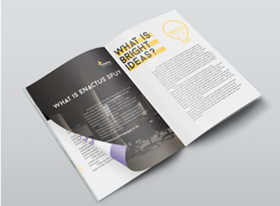
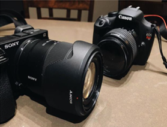
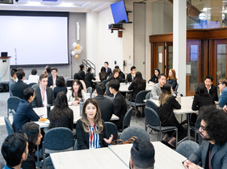

SQLPassionate Data Analyst · Aspiring Product Manager
Data analyst |
Hi, I'm Carlo! I'm currently a data analyst at Vancouver Coastal Health with a passion for turning complex data into clear, actionable insights. I've led Agile ceremonies for teams of 15, built executive dashboards, and contributed to AI-powered products and now I'm channeling that experience towards new and exciting roles in product management or data.
Download Resume
Skills
Tools and technologies I work with regularly.
 Tableau
Tableau Power BI
Power BIExcel
 Jira
JiraExperience
Where I've worked and what I've built.

Data Analyst & Scrum Master
Vancouver Coastal HealthAnalytics delivery for BC's largest healthcare authority, serving 1.25M people across the province.
- Launched a government program's first production dashboard where I extracted and transformed 10+ years of raw SQL data to define key metrics. I worked closely with the program team over a set of months to really determine what they needed. We landed on a dashboard with multiple tabs that truly showcases the patient journey and allows them to investigate any part of the process. It now has over 5,000+ views total.
- Shaped a $176M infrastructure project by forecasting population growth and presenting findings directly to regional management. I dug deep into historical regional program data and investigated preliminary findings to verify our findings. Eventually, I presented to senior leadership the findings and the case for expanding their presence in a region.
- Modernized legacy Tableau dashboards, where the previous dashboards were legacy and losing multiple data sources. I took it upon myself to start learning our new DataBricks technology and was one of the first team members to utilize DataBricks to modernize an old SQL Server dashboard. I checked for ways to increase efficiency and reduce redundant tables to create a faster and more responsive dashboard.
- Directs Agile ceremonies for 15 healthcare analysts, where I happily take lead as Scrum Master. I lead daily huddles, I follow up with tasks from our team retrospectives and take responsibility in planning our sprints and workload. I help coordinate over 8+ health authority subject areas and expert analysts day-to-day.

Data Analytics Consultant (Internship)
SlalomEmbedded with client teams to translate business problems into data products and technology strategy.
- Built C-suite Power BI dashboards that utilized DAX and calculated measures tracking a multitude of KPIs, with 3 at the core of business growth. Together with a senior data engineer, we determined what were the main factors of growth for a large client. After we delivered the dashboard, the stakeholders were so enthusiastic that they requested 6 additional dashboards covering their other sites.
- Co-developed a generative AI compliance tool using Python, OpenAI and Azure. The compliance tool would help our HR client quickly generate accurate safety compliance documents that cut manual work down by 4 hours a day. Senior management was increidbly impressed and eventually retooled and reused this compliance tool for over ~7,000 clients in different industries.
- Delivered a data engineering solution in Python, SQL, and Databricks enabling API-based analysis of insurance claims. I used an API to track various factors surrounding insurance claims for a client. The solution was able to embed itself into the client's other tools and helped reduce back-and-forth work and kept all their tools in their ecosystem.
Digital Project Manager (Internship)
ConversionProject delivery at a specialized A/B testing agency serving Fortune 500 clients.
- Appointed as project lead during internship on client accounts. I impressed our team so much with my fantastic multi-tasking and stakeholder management that I was their first ever intern to be appointed as a project lead. I proudly managed timelines, connected with clients and worked with cross-functional teams and delivered 20% more than my expected goal output.
- Redesigned QA/QC workflows company-wide, saving approximately 2 hours per project. I wanted to give my time a farewell gift before the end of my internship and I compared different tools to help them reduce QA/QC time. I showcased some possible solutions and options and they landed on one of my suggestions which has helped reduce errors and increase daily efficiency.
- Ran A/B Tests with 3 different collaborative teams from start-to-finish. I emphasized accuracy in our deliverables and would help ideation sessions to provide new tests for the clients. I contributed to over 20 different projects and would then be tasked with overseeing the project and stakeholder management.
Education & Volunteering
Academic background and community involvement.

Simon Fraser University
Bachelor of Business Administration
Azure Fundamentals
Microsoft · AZ-900
Cloud Practitioner
Amazon Web Services · CCP
Volunteering & Extracurriculars
1
Bright Ideas Mentor
Mentored 2 teams of high school students in the fundamentals of entrepreneurship, guiding them through venture development, proof-of-concept preparation, and final pitch presentations to a panel of judges.


DSU Photo Club President
Co-founded the photography club at Douglas College, growing it to 100+ active members. Oversaw curriculum planning, event coordination, and executive team development — fostering a creative community built on shared passion and lasting friendships.
2
3
Enactus Project Manager
Led sustainable entrepreneurship workshops over an 8-month tenure as PM, managing student teams through ideation, iteration, and stakeholder presentations. I proudly led students in finding actionable, real-world business cases for various organizations.

Let's Connect
I'm actively looking for my next role and would love to chat. If what you're building sounds like a place where I'd thrive, I'd be happy to chat!
WHAT I'M LOOKING FOR
- Product Manager, Project Manager, Data Analyst, or Business Analyst roles in Vancouver, Toronto, or remote positions.
- Collaborative teams that champion data-informed decisions and genuine cross-functional partnership.
- Organizations that invest in their people, value teamwork, and treat employee growth with care.
- Companies driven by sustainability and are forward-looking, excited to build products and services that actually make a difference.
REACH OUT
Email
c.acob9@gmail.com
LinkedIn
linkedin.com/in/carloacob
Location
Based in Vancouver · Open to relocating to Toronto
Quick Overview
Experience
3+ years across healthcare analytics, consulting & product delivery
Focus
Data products, Agile leadership, stakeholder communication
Stack
SQL, Python, Tableau, Power BI, Azure, Databricks
Approach
Data-first thinking, cross-functional collaboration, bias toward action